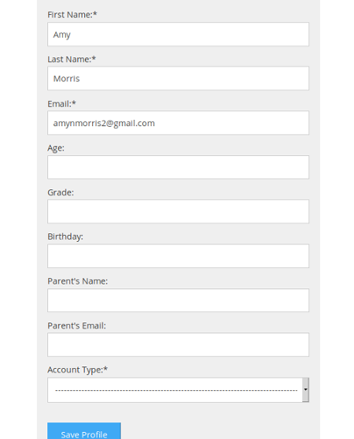
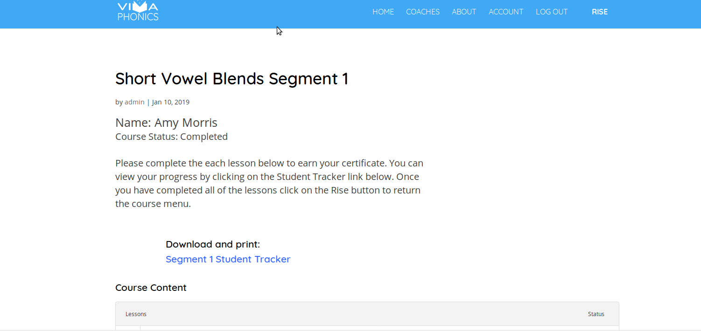
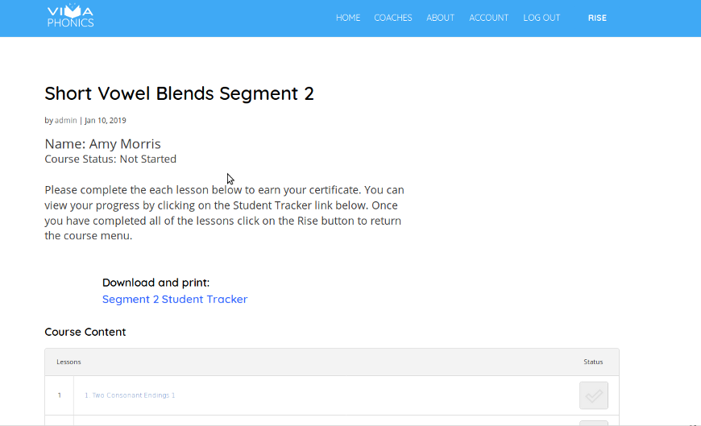
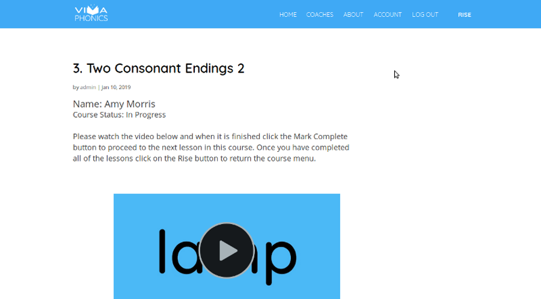
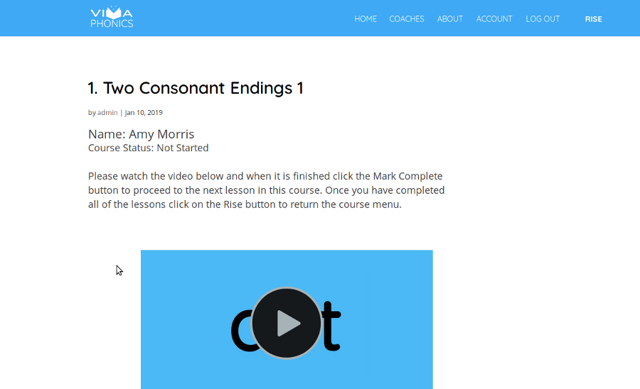

VivaPhonics is a standard Wordpress site written in PHP and relies on themes for the websites styling and various plugins to for it's functionality. Currently the site is the Diva them and the following plugins:
Upon inspection I determined that MemberPress and LearnDash are the plugins that control the templates you want altered. Adding additional fields to the registration page will not require much effort and can be done with the standard plugin. Below is an example registration profile that I can create for you.
We can add or delete any fields you want and require users to submit data or let them register without submitting any data on a field by field by field basis. The only limitation I see at this point is the data is not easily exportable to the templates because Learning Dash and MemberPress are seperate plugins and the code does not share variables for all of the fields you wanted to add. Unfortunately this is one of the drawbacks of using WordPress. Plugins are not usually written by the developers and most of the time you cannot mix and match data/variables across plugins just because they are so called "compatible". That said, if we proceed I could create pages that don't utilize the core fuctions of Learn Dash and then we could easily incorporate pages are able to access any variables in your database. For instance, if you wanted to keep track of a student's grades or progress we could import the students name and say parents contact information (or whatever you wanted) into page form or page that you utilize for reports and your records. If this does not make sense please ask questions on our next call and I can go into more detail and make it more clear. Often times things are lost in translation in technical write-ups.
The good news is I am able to write functions that can pull the Students Name, Course Progress and a Text Block to the Learn Dash Templates for both the Course and Lesson Sections. In order to alter the templates I will have to modify the existing code and write a couple of fucntions that can coexist with the original code. This can be tricky and may require a little extra effort each time you upgrade to a new version LearnDash and I'll explain more about this on our call next week. Don't worry it's a piece of cake, simple file replacement or basically saving the files I will give over the default ones that come with the plugin. While reviewing the code I went ahead and wrote a couple of functions that can accomplish what I think you are looking for. Below are a few screenshots that show a more personalized Course and Lesson Section as well as a text block where you can include some directions. I tried to write something like I would want but feel free to change the verbage how ever you want. Keep in mind that we the same verbage will show on all templates for courses and lessons.
   As you can see my code adds the studens name and incorporates thier course status and includes some basic instructions that will help them navigate the course/lesson. I would also like to remove the "posted by admin/date" section that appears above the name so it looks a little better but do not know if that is possible using the current set up. I can look into if you want me to. The more I work with your set up the easier and thus cheaper things will get because it will require less time on my part. In addition, any plugin I create for you would be very easy to modify given that I created it.
In conclusion I would like to thank you for allowing me to submit this proposal and reiterate that I stand behind my products and will always do my best to assist you in the future if you utilize my services. I am really impressed with you site and believe with you content and my programing skills that we could make a site that could be utilized by both students and coaches. All the services you are currently getting from the other tudor site could easily be created managed under one roof. I would like to discuss some ideas I have on our call and if you are open to the idea I can submit you a workplan on creating a teacher's/reporting side to VivaPhonics. Thank you again and I look forward to speadking to you next week.